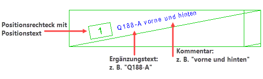
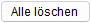

")
Ändern der gesamten Positionierung oder einzelner Elemente. Die aktuellen Einstellungen der Positionierung werden nach Auswahl im Funktionsbereich angezeigt.
Elemente einer Positionierung (hier Harfe)
Die Elemente können einzeln angeklickt werden.
 |
|
Tipps: |
|
·Gültige Angaben, wie z. B. die Lage von Texten oder Positionslinien, können Sie mit der Eingabetaste oder Rechtsklick übernehmen. ·Die Darstellung der Positionierung können Sie vorab im DefPos-Dialog einstellen. [Formst | BiPos → DefPos]. |


Positionstext ändern §Klicken Sie den Positionstext an. [Welche Position?]. §Geben Sie einen neuen Textwinkel an und setzen Sie das Positionssymbol mit einem Linksklick ab. [Textrichtung]; [Lage]. Um die Lage beizubehalten, bestätigen Sie mit Rechtsklick. §Bestätigen Sie alle weiteren Angaben mit Rechtsklick oder ändern Sie diese ggf. Ergänzungstext ändern §Klicken Sie den Ergänzungstext an. [Welche Position?]. §Wählen Sie unter der Abfrage einen neuen Ergänzungstext oder geben Sie einen neuen Text ein. Bestätigen Sie die Eingabe. [Ergänzungstext]. §Setzen Sie den Ergänzungstext abschließend mit einem Linksklick ab. [Textlage]. Um die Lage beizubehalten, bestätigen Sie mit Rechtsklick. §Bestätigen Sie alle weiteren Angaben mit Rechtsklick oder ändern Sie diese ggf. Kommentartext ändern §Klicken Sie den Kommentar an. [Welche Position?]. §Wählen Sie unter der Abfrage einen neuen Kommentar oder geben Sie einen neuen Text ein. Bestätigen Sie die Eingabe. [Kommentar]. §Setzen Sie den Kommentar abschließend mit einem Linksklick ab. [Textlage]. Um die Lage beizubehalten, bestätigen Sie mit Rechtsklick. |
Positionssymbol ändern §Klicken Sie den Positionstext an. [Welche Position?]. §Wählen Sie im Funktionsbereich ggf. eine andere ID aus und bestätigen Sie mit Rechtsklick. §Geben Sie einen neuen Textwinkel an und setzen Sie das Positionssymbol mit einem Linksklick ab. [Textrichtung]; [Lage]. Die Verbindungslinien werden vom Positionskreis bis zu den Formmatten-Elementen gezeichnet. Um die Lage beizubehalten, bestätigen Sie mit Rechtsklick. §Bestätigen Sie alle weiteren Angaben mit Rechtsklick oder ändern Sie diese ggf. Positionslinien ändern §Klicken Sie eine beliebige Verbindungslinie an. [Welche Position?]. §Linien entfernen [Linie(n)]: –Um vorhandene Linien zu entfernen, klicken Sie –Um alle Linien zu löschen, klicken Sie auf die Schaltfläche  §Linien hinzufügen [Linie(n)]: –Fächer: Bewegen Sie den Cursor an ein Formmatten-Element, so dass es hervorgehoben wird, und klicken Sie die linke Maustaste. –Rundstahl und Matten frei: Sie können den Endpunkt der Linie frei wählen. §Bestätigen Sie alle weiteren Angaben mit Rechtsklick oder ändern Sie diese ggf. Ergänzungstext ändern §Klicken Sie den Ergänzungstext an. [Welche Position?]. §Wählen Sie unter der Abfrage einen neuen Ergänzungstext oder geben Sie einen neuen Text ein. Bestätigen Sie die Eingabe. [Ergänzungstext]. §Setzen Sie den Ergänzungstext abschließend mit einem Linksklick ab. [Textlage]. Um die Lage beizubehalten, bestätigen Sie mit Rechtsklick. §Bestätigen Sie alle weiteren Angaben mit Rechtsklick oder ändern Sie diese ggf. Kommentartext ändern §Klicken Sie den Kommentar an. [Welche Position?]. §Wählen Sie unter der Abfrage einen neuen Kommentar oder geben Sie einen neuen Text ein. Bestätigen Sie die Eingabe. [Kommentar]. §Setzen Sie den Kommentar abschließend mit einem Linksklick ab. [Textlage]. Um die Lage beizubehalten, bestätigen Sie mit Rechtsklick. |
 . Die Linien werden nacheinander entfernt. Wird die letzte Linie gelöscht, gelangen Sie zur Abfrage [
. Die Linien werden nacheinander entfernt. Wird die letzte Linie gelöscht, gelangen Sie zur Abfrage [Siehe auch: